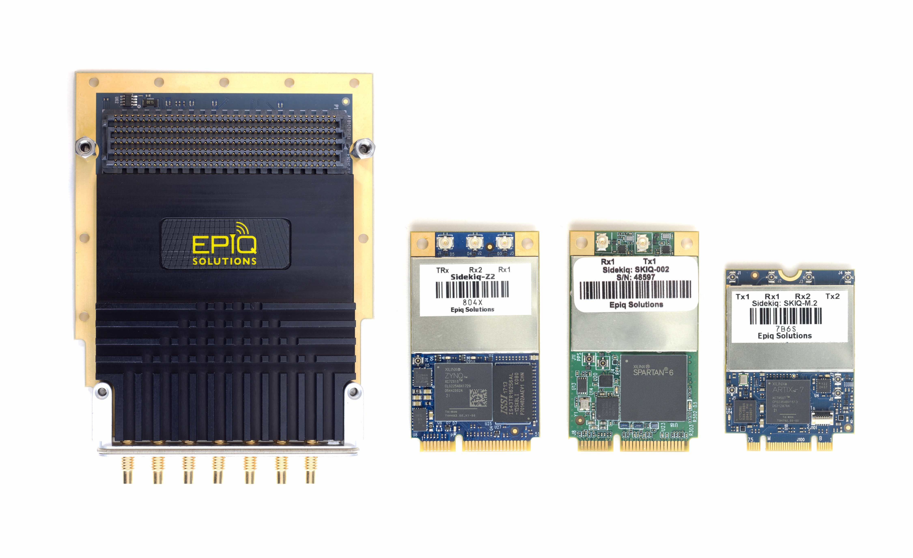

Sidekiq Software Development Manual¶
Document Version 2.20
For libsidekiq version 4.18.x

Disclaimer¶
Epiq Solutions is disclosing this document (“Documentation”) as a general guideline for development. Epiq Solutions expressly disclaims any liability arising out of your use of the Documentation. Epiq Solutions reserves the right, at its sole discretion, to change the Documentation without notice at any time. Epiq Solutions assumes no obligation to correct any errors contained in the Documentation, or to advise you of any corrections or updates. Epiq Solutions expressly disclaims any liability in connection with technical support or assistance that may be provided to you in connection with the Information.
THE DOCUMENTATION IS DISCLOSED TO YOU “AS IS” WITH NO WARRANTY OF ANY KIND. EPIQ SOLUTIONS MAKES NO OTHER WARRANTIES, WHETHER EXPRESSED, IMPLIED, OR STATUTORY, REGARDING THE DOCUMENTATION, INCLUDING ANY WARRANTIES OF MERCHANTABILITY, FITNESS FOR A PARTICULAR PURPOSE, OR NONINFRINGEMENT OF THIRD PARTY RIGHTS. IN NO EVENT WILL EPIQ SOLUTIONS BE LIABLE FOR ANY CONSEQUENTIAL, INDIRECT, EXEMPLARY, SPECIAL, OR INCIDENTAL DAMAGES, INCLUDING ANY LOSS OF DATA OR LOST PROFITS, ARISING FROM YOUR USE OF THE DOCUMENTATION.
All material in this document is copyrighted by Epiq Solutions 2014-2024. All trademarks are property of their respective owners.
Document History¶
Overview¶
Developing with libsidekiq¶
Developing with libsidekiq
- Installation Procedure
- Software Development Flow
- Tools/Libraries Needed for Linux Application Development
- Developing Custom Applications with libsidekiq
- Structure of an Application using libsidekiq
- Proper Header File Inclusion
- Initializing libsidekiq
- Configuring an Interface using a Handle
- Frequency Hopping
- Operation Modes
- RF Port Configuration
- I/Q Ordering Mode
- Packed Mode (Sidekiq mPCIe, m.2, and Stretch / m.2-2280 only)
- Starting an Rx Interface
- Configuring a Tx Interface
- Starting the Tx Interface
- Simultaneous use of Tx and Rx Interfaces
- Stopping and Releasing an Interface
- Pin Control enable of RFIC signal paths (Sidekiq X4 only)
- Clock and Time Management Resources
- Timestamp Details
- Automatic Calibration
- Receive Stream Mode
- Hotplug
- Exiting
- Critical Errors
- Using Libsidekiq Remotely
- Configuring Sample Rate / Channel Bandwidth
- Example X4 Use Cases: Rx
- Example NV100 Use Cases: Rx
- Sidekiq API
- FPGA user_app examples
Hosts & Platforms¶
Hosts & Platforms
- Windows Sidekiq Development
- Developing for Alternative Host Platforms
- Assessing Throughput Performance
- DKMS
- Advanced Topics
Hardware Information¶
Errata¶
Software Errata
Troubleshooting¶
Release Information¶
Release Information
- Known Issues / Limitations
- Release History
- v4.18.0 - 2-Feb-2024
- v4.17.2 - 28-Feb-2022
- v4.17.1 - 11-Feb-2022
- v4.17.0 - 15-Oct-2021
- v4.16.2 - 9-Sept-2021
- v4.16.1 - 9-Jun-2021
- v4.16.0 - 1-Jun-2021
- v4.15.2 - 31-Mar-2021
- v4.15.1 - 3-Mar-2021
- v4.15.0 - 3-Feb-2021
- v4.14.2 - 12/09/2020
- v4.14.1 - 10/30/2020
- v4.14.0 - 10/16/2020
- v4.13.1 - 09/10/2020
- v4.13.0 - 06/30/2020
- v4.12.2 - 04/06/2020
- v4.12.1 - 02/21/2020
- v4.12.0 - 02/10/2020
- v4.11.1 - 11/22/2019
- v4.11.0 - 10/17/2019
- v4.10.1 - 08/16/2019
- v4.10.0 - 07/30/2019
- v4.9.5 - 06/26/2019
- v4.9.4 - 05/03/2019
- v4.9.3 - 03/19/2019
- v4.9.2 - 03/08/2019
- v4.9.1 - 02/26/2019
- v4.9.0 - 02/06/2019
- v4.7.1 - 10/15/2018
- v4.7.0 - 09/24/2018
- v4.6.0 - 06/15/2018
- v4.4.0 - 11/02/2017
- v4.2.1 - 11/02/2017
- v4.2.0 - 09/29/2017
- v4.0.1 - 07/18/2017
- v4.0.0 - 05/15/2017